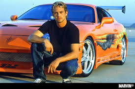

Paul Walker
Paul William Walker IV (Glendale, 12 de setembre de 1973 - Santa Clarita, 30 de novembre de 2013)fou un actor estatunidenc que saltà a la fama en protagonitzar la The Fast and the Furious (2001) i les seves seqüeles, a més d'actuar en pel·lícules com Joy Ride, La prova del crim i l'aclamada per la crítica Eight Below.

Biografia
Inici
Paul Walker va néixer a Glendale, però es crià a la Vall de San Fernando, a Los Angeles. Fill de Paul Walker III (un contractista de clavegueram) i Cheryl Crabtree (una ex-model), és el segon de cinc germans (tres germans i dues germanes). Walker fou criat com a mormó, graduant-se del Village Christian School. Després de l'escola secundària assistí a diversos col·legis de la comunitat per obtenir el graduat i treure's la carrera de biologia marina.
Carrera

Walker començà la seva carrera a la pantalla petita sent molt petit, quan va protagonitzar un anunci de televisió per a Pampers. I és que no és estrany, sent fill d'una model, que només amb dos anys ja fos habitual veure'l als càstings de models. El 1985 començà la seva carrera a la televisió, aconseguint papers a Highway to Heaven, Who's the Boss?, The Young and the Restless i Touched By an Angel.
La carrera cinematogràfica de Walker s'inicia el 1987, amb el film d'horro-comèdia Monster in the Closet. Continuà amb papers en moltes altres pel·lícules sense gaire èxit. No fou fins al 1998 quan Walker feu el seu debut al llargmetratge Meet the Deedles, que finalment va valdre-li la fama. Això donà lloc posteriorment al seu creixement com a actor i la possibilitat d'obtenir els papers a pel·lícules com Pleasantville, Varsity Blues, She's All That i The Skulls.
Paul Walker amb Dwayne Johnson, Ludacris, Jordana Brewster i Vin Diesel el 2011
El 2001 Walker va atènyer la fama quan protagonitzà juntament amb Vin Diesel el film d'acció The Fast and the Furious. El film convertí Paul en una superestrella, tant per la crítica com pel públic general. El seu personatge de Brian O'Connor tornà el 2003 a la seqüela 2 Fast 2 Furious i a l'acabada d'estrenar Fast and Furious (2009). A més de la saga The Fast and the Furious ha actuat a Joy Ride, Into the Blue i Timeline. I també va tenir un paper secundari a l'adaptació de Banderes dels nostres pares el 2006.
A més de les The Fast and the Furious Walker ha estat reconegut pel film-thriller Running Scared i Eight Below de Walt Disney Pictures, estrenada el 2006. Eight Below obtingué l'aclamació crítica i oberta al primer lloc a la taquella, guanyant més de 20 milions de dòlars americans durant el seu primer cap de setmana. Durant la filmació de Running Scared el director Wayne Kramer declarà que Walker aquest tipus està en un altre nivell, però ell no és així realment» quan comparen Walker amb el seu personatge al film: Joey Gazelle. Kramer continuà dient m'agrada treballar amb ell [amb Walker] perquè és com un director completament, recolza la meva visió del que és la pel·lícula. I encara millor, és completament part del joc.
També protagonitzà la pel·lícula independent The Lazarus Project que fou estrenada en DVD el 21 d'octubre del 2008.
S'anuncià que Paul Walker juntament amb Matt Dillon i Hayden Christensen protagonitzarien el film de crim i drama Bone Deep, les filmacions per aquesta pel·lícula començaren a principis del setembre del 2008.
Mort
Mort

El 30 de novembre de 2013 a les 15:30 PDT, Walker, de 40 anys, i Roger Rodas, de 38, tornaven d'un esdeveniment benèfic, el Walker Reach Out Worldwide per a les víctimes del tifó Haiyan, amb Rodas conduint el seu Porsche Carrera GT. En una zona de límit de velocitat de 45 milles per hora (72 km/h) al carrer Hercules a prop de Kelly Johnson Parkway a València, Santa Clarita, Califòrnia, el cotxe es va estavellar contra un fanal de formigó i dos arbres i es va incendiar. Rodas va morir de múltiples traumes, mentre que Walker va morir pels efectes combinats de traumes i cremades. Els dos cossos van ser completament cremats per les flames, però el seu reconeixement va ser possible.
No es van trobar alcohol ni cap altra droga en els cossos de cap d'ells; ni la fallada mecànica ni les condicions de la carretera semblaven tenir un paper important. La policia no va trobar proves d'una cursa de cotxes il·legal. La investigació va concloure que la velocitat del cotxe era d'entre 80 mph (130 km/h) i 93 mph (150 km/h), cosa que, combinada amb un desgast excessiu dels pneumàtics, va ser el principal motiu de l'accident.
Amb el rodatge de Fast and Furious 7 en marxa en el moment de la mort de Walker, Universal va anunciar una pausa indeterminada en la producció, citant el desig de parlar amb la família abans de decidir què fer amb la pel·lícula.
La tomba de Paul Walker
Nombrosos amics i estrelles de cinema van retre homenatge a Walker a les xarxes socials. El seu cos va ser cremat i les seves cendres van ser enterrades en una cerimònia no confesional al Forest Lawn Memorial Park (Hollywood Hills).
fuente: Wikipedia